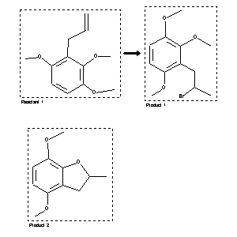

|  |
| FA | RX(1); FLST(1); RX(1) |
Reaction (1 of 1)
| Reaction ID | 2155687 |
| Reactant BRN | 2581905 |
| Reactant | 2,3,6-Trimethoxyallylbenzene |
| Product BRN | 5530732; 5521009 |
| Product | 1-(2'-Bromopropyl)-2,3,6-trimethoxybenzene; 2,3-Dihydro-4,7-dimethoxy-2-methylbenzofuran |
| No. of Reaction Details | 1 |
Reaction Details (1 of 1)
| Reaction Classification | Preparation |
| Reagent | HBr |
| Solvent | CHCl3 |
| Time | 2 hour(s) |
| Temperature | 0 |
| Citation Pointer | 5703644; Journal; Devakumar, C.; Mukerjee, S. K.; IJSBDB; Indian J.Chem.Sect.B; EN; 25; 1986; 368-372; |
Reference (1 of 1)
| Citation Number | 5703644 |
| Document Type | Journal |
| Authors | Devakumar, C.; Mukerjee, S. K. |
| CODEN | IJSBDB |
| Journal Title | Indian J.Chem.Sect.B |
| Language Code | EN |
| (Series) Volume | 25 |
| Publication Year | 1986 |
| Page | 368-372 |